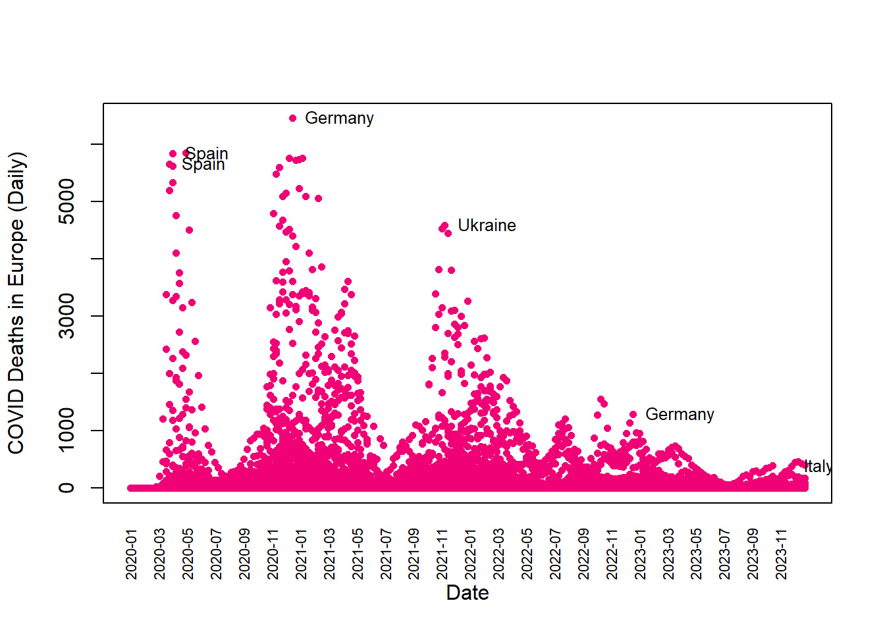

# Load necessary libraries
library(dplyr)
library(ggplot2)
library(gridExtra)
library(reshape2)
data(iris)
group <- iris %>%
group_by(Species) %>%
summarize(sepal_mean = mean(Sepal.Length),
petal_length_mean = mean(Petal.Length),
petal_width_mean = mean(Petal.Width))
ggplot(group, aes(x = Species, y = petal_length_mean, width = (petal_width_mean/1.75))) +
geom_bar(stat = "identity", fill= "blue") +
labs (y = "Petal Legnth", x = "Species")Assignment 4
Generate a program to create a chart (R Graphic/ggplots)
Plot #1
Plot #2
par(family = "Garamond") # Change font in R basic plot
pairs_color <- c("steelblue", "lightgreen", "firebrick")
pairs(iris[1:4], pch=2, col=pairs_color)Plot #3
group <- cars %>% group_by(speed) %>% summarise(distmean = mean(dist))
ggplot(group, aes(x = speed, y = distmean)) +
geom_bar(stat = "identity", fill= "blue") +
coord_flip() +
labs(title = "Mean distance of cars by speed", y = "Mean distance", x ="Speed")Pre-hackathon
owidall<- read.csv("https://raw.githubusercontent.com/owid/covid-19-data/refs/heads/master/public/data/owid-covid-data.csv")
# Deselect cases/rows with OWID
owidall = owidall[!grepl("^OWID", owidall$iso_code), ]
# Subset by continent: Europe
owideu = subset(owidall, continent=="Europe")
attach(owideu)
owideu$date2<-as.Date(owideu$date)
owidsub = subset(owideu, new_deaths<6490)
df_subset1 <- subset(owidsub, !is.na(new_deaths) & !is.na(date2)) # Remove the dates that have missing data
df_subset1b <- df_subset1 %>% filter(location !="Russia") # Exclude Russia
df_subset2 <- df_subset1b %>% filter(date2<= as.Date("2023-12-31")) # Shorten the time period
date_label <- as.Date(c("2020-12-20", "2020-04-05", "2020-03-29", "2021-11-14", "2022-12-25", "2023-12-03")) # Select the peak country-date
# Generate the maximum death dates
max_deaths_dates <- df_subset2 %>%
filter(date2 %in% date_label) %>%
group_by(date2) %>%
summarise(max_new_deaths = max(new_deaths, na.rm = TRUE)) %>%
ungroup()
# Group it back with the countries
max_deaths_countries <- df_subset2 %>%
semi_join(max_deaths_dates, by = c("date2", "new_deaths" = "max_new_deaths")) %>%
select(date2, new_deaths, location)
# Generate the plot
x <- df_subset2$date2
y <- df_subset2$new_deaths
par(family = "Georgia")
plot(x, y, ylab="COVID Deaths in Europe (Daily)", xlab="Date", pch= 16, cex= .75, col="#f00276", xaxt="n") #Remove x-axis
text(max_deaths_countries$date2, max_deaths_countries$new_deaths,
labels = max_deaths_countries$location,
pos = 4, cex = 0.8, col = "black")
axis(1, x, labels = format(x, "%Y-%m"), cex.axis = 0.7, las = 3, gap.axis = 1.5, tick = FALSE)